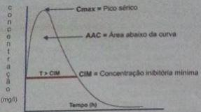

Um menino de três anos de idade, previamente saudável, apresenta lesão dolorosa eritematosa, com 3 cm de diâmetro, em coxa direita, que começou a drenar secreção purulenta espontaneamente. Não teve febre e está em bom estado geral. Na cultura da secreção, houve crescimento de pele recorrentes por S que apresenta o mecanismo de resistência à oxacilina e a outros betalactâmicos.
O tratamento de endocardite infecciosa em prótese valvar, causada por essencial, por sua habilidade única de matar estafilococos aderentes a próteses, a utilização de
Qual dos antibióticos abaixo deve ser infundido em dose única diária?
As oxazolidinonas são uma classe nova de agentes antimicrobianos sintéticos não relacionadas a outras classes já conhecidas, sendo bem indicadas nos seguintes casos, EXCETO:
Paciente idoso, internado por quadro de AVC, desenvolveu durante a hospitalização quadro de pneumonia, que complicou com choque séptico. Tem história de reação colateral grave, no passado, após o uso de Cefepime. Qual das seguintes opções, pode ser usada com eficácia e segurança neste paciente?
A duração ideal da antibioticoterapia no tratamento da PAC não está ainda definitivamente estabelecida, sendo a antibioticoterapia de curta duração ser a mais apropriada, uma vez que proporciona diversos benefícios, exceto:
Recentemente, estudos epidemiológicos indicaram maior incidência de alterações vasculares em pacientes que zeram uso de uorquinolonas como antibiótico no tratamento de infecções. Qual alternativa abaixo contempla as principais alterações?
Mulher, 39 anos, antecedente de infecção urinária de repetição e aneurisma de aorta abdominal, usuária crônica de antibióticos, chega à Urgência em choque séptico de foco urinário e disfunção renal. Traz uma urocultura de 04 meses atrás com E. Coli ESBL. Sabendo que o uso do antimicrobiano correto na primeira hora tem relevância no prognóstico e diante das informações descritas acima, a droga MAIS adequada para este caso é:
Paciente em 25º dia de pós-operatório de apendicectomia aberta complicada evoluindo com infecção de ferida operatória. Qual a bactéria gram positiva mais comumente associada a infecção de ferida operatória em casos de longa internação como esse?
O tipo de bactéria mais frequentemente encontradas nas peritonites é
A bactéria intestinal mais associada à translocação intestinal e contaminação de outros órgãos abdominais é:
A associação que NÃO corresponde o antibiótico e seu efeito adverso temido é
Constitui opção terapêutica para o tratamento de infecções causadas por bactérias Gram negativas multidrogarresistentes à seguinte combinação:
Um paciente, de 18 anos, é admitido na Emergência de um hospital público devido a infarto agudo do miocárdio. No 6º dia de internação, apresenta febre de 38°C e leucometria de 14.500/mm³, com 8% de bastões. Ao exame físico, é detectada área de hiperemia (halo: 3cm) em sítio de inserção de cateter vascular profundo. As hemoculturas realizadas como parte da investigação do quadro infeccioso detectam o crescimento de Staphylococcus aureus resistente a oxacilina. Dentre os antimicrobianos a seguir, a principal opção terapêutica para o micro-organismo detectado é:
Considere três pacientes com quadro de sepse e as seguintes hemoculturas: I. Staphylococcus aureus resistente a oxacilina. II. Escherichia coli produtora de ESBL. III. Pseudomonas aeroginosa resistente a carbapenêmicos. Polimixina, meropenem e teicoplanina são indicados, respectivamente, para:
Uma bactéria (sp) pode se tornar resistente à cefalosporina por alterações bioquímicas, como:
Chlamydia trachomatis, uma bactéria intracelular obrigatória, está relacionada a várias infecções sendo improvável que seja o agente etiológico de
A resistência bacteriana constitui enorme problema na atualidade. As betalactamases de espectro estendido ( ESBL ) respondem melhor ao tratamento com a seguinte classe de antimicrobianos :
Nas infecções causadas por Staphylococcus aureus meticilina/oxacilina resistentes, é considerada uma opção terapêutica eficaz o seguinte antimicrobiano da classe das cefalosporinas:
Você atua como médico de família em uma unidade básica de saúde e atende um paciente do sexo masculino de 58 anos, que traz uma carta de contrarreferência de um serviço de urologia, com diagnósticos de hiperplasia benigna de próstata e infecção de trato urinário recorrente. O urologista recomenta os seguintes tratamentos para uso contínuo: doxazozina 1 mg (VO) 1x/dia e nitrofurantoína 100 mg (VO) 1x ao dia, à noite, os quais o paciente está em uso há 1 mês, e dá alta do serviço especializado para que você continue o seguimento do paciente. No momento da sua consulta, o paciente se queixa de a namento do jato urinário e esforço miccional, sem outras queixas, e traz urocultura positiva para E. coli, 100.000 col/mL, sensível a todas as quinolonas cefalosporinas, e aminoglicosídeos, mas com sensibilidade intermediária à nitrofurantoína. Diante dessa situação, assinale a alternativa que contém a conduta mais adequada para esse paciente.
Um jovem de 32 anos, em bom estado geral, apresenta obstrução da via biliar, para qual foi solicitar uma CPER. Quais bactérias devem ser profilaticamente cobertas e qual o antibiótico de escolha?
Paciente de 72 anos, sexo masculino, residente em instituição de longa permanência, com limitações para realização das atividades básica de vida diária esteve internado em Serviço Hospitalar para tratamento de pneumonia até 10 dias atrás com Ceftriaxona e Azitromicina. Cerca de sete dias após a alta, AG evoluiu com sonolência, taquipneia, aumento de secreção respiratória e após avaliação foi reinternado em Unidade de Terapia Intensiva sob suporte ventilatório através de tubo orotraqueal; foram coletadas amostras de sangue, urina e de aspirado traqueal para realização de culturas e terapia antimicrobiana empírica iniciada com Piperacilina/Tazobactam. Resultados de culturas revelaram crescimento de Acinetobacter baumannii terapêutica para tratamento do paciente mediante registro de sensibilidade em antibiograma.
Qual dos itens abaixo não é sugestivo de infecção estafilococcica?
Dos antibióticos relacionados, o NÃO indicado para tratamento de infecção por anaeróbios é:
Recém-nascido de 15 dias de vida é levado à emergência devido a quadro febril associado à rejeição alimentar, queda do estado geral e choro inconsolável às trocas de fralda. Ao exame físico, apresenta febre de 39,5°C, eritema e dor à mobilização em região coxofemoral esquerda e em tíbia esquerda. O hemograma revelou leucocitose e desvio para a esquerda, PCR e VHS elevados; a radiogra a de membro inferior esquerdo apresentou deslocamento dos planos musculares profundos em metá ses de fêmur e tíbia; hemocultura com crescimento de colônias de CA-MRSA e D-test negativo. Em relação a esse caso, é correto afirmar que:
Idoso de 80 anos, internado em instituição de longa permanência há quatro dias, evolui com febre de 39°C, dor pleurítica e tosse produtiva com secreção amarelada. Nega tabagismo. Fez uso de amoxacilina por dois dias, sem apresentar nenhuma melhora. Foi colhida Gram, cujo resultado foi negativo; duas hemoculturas revelaram crescimento de cocos Gram-positivos em cacho de uva. O raio X de tórax mostrou um in ltrado no lobo pulmonar inferior direito, com pneumatocele. Nesse momento, o antibiótico mais apropriado para o tratamento e seu mecanismo de ação, respectivamente, são:
Uma mulher de 54 anos, com diagnóstico de hipertensão arterial sistemática adição à nicotina e diabete melito do tipo 2 está internada na enfermaria por motivo de dispneia e febre, recebendo a seguinte prescrição médica: - Dieta oral branda hipossódica e para diabete melito. - sinais vitais 4/4h. -Soro siológico 0,9% 250ml IV nas 24h. - Cefotaxima 1g IV 12/12h. - Enoxaprina 40mg/dia. Dipirona 1g IV até 4/4h SOS. - Glicemia capilar 6/6h e insulina regular. Conforme esquema (protocolo do hospital). Para qual das situações abaixo esta prescrição poderia corretamente ser usada?
Bactérias que possuem o cromossomo ampC, como a Enterobacter, Serratia, Citrobacter, Proteus, Providencia e Morganella, podem apresentar a seguinte característica:
Paciente feminina de 70 anos é internada por exacerbação infecciosa de DPOC. Ela apresenta melhora gradual e significativa ao longo do curso de antibioticoterapia adequada para o foco pulmonar. No entanto, desenvolve múltiplos episódios de diarreia e evolui com hipotensão arterial. É transferida para a UTI com diagnóstico de choque séptico por Clostridium difícile inibição da:
Qual dos seguintes antimicrobianos é adequado para o tratamento de uma pneumonia causada por pseudomonas aeruginosa?
Com relação ao uso racional de antibióticos, é CORRETO afirmar:
O Sr. JVD procurou consulta com o Médico de Família da UBS de seu bairro com queixa de corrimento pela uretra. Após anamnese e exame físico e identi cando a presença de corrimento uretral espontâneo, o médico solicitou exame de bacterioscopia na própria UBS recebendo o laudo de diplococos gram-negativos. Nesse sentido o procedimento médico a seguir foi:
A respeito dos antibióticos pode-se afirmar:
Gestante com infecção urinária apresenta ao antibiograma sensibilidade a vários antibióticos, sendo a melhor opção dos listados abaixo,
Espectro de ação e indicações clínicas Paciente internado na unidade de terapia intensiva há 38 dias, evoluindo com pneumonia associada à ventilação mecânica por Acinetobacter baumannii resistente aos carbapenêmicos. Qual é a opção adequada de terapia antimicrobiana?
Todas as drogas abaixo têm ação antipseudomonas, EXCETO:
Além de conhecer o espectro de atividade, ter boas noções de per l de efeitos colaterais dos antimicrobianos é fundamental para uma boa prescrição médica. Por exemplo, temos alguns antimicrobianos que classicamente rebaixam o limiar convulsivo, aumentando o risco de crises epilépticas, entre eles o(a):
Das drogas listadas a seguir, aquela que NÃO deve ser utilizada durante a gravidez é
No pronto-socorro de clínica médica, um adolescente entra com quadro de asma grave. Com base nas evidências atuais, o médico explica à mãe do paciente que as infecções virais são comuns nesse tipo de exacerbação, mas, pela gravidade da situação, não pode ser descartada uma infecção por bactérias atípicas. Considerando-se esse caso clínico e os conhecimentos médicos correlatos, entre as bactérias atípicas referidas, é correto citar as duas mais comuns, que são
Luiza, 19 anos, primigesta na 38ª. semana de gravidez, comparece a uma consulta na UBS com queixa de disúria e polaciúria. Traz uma exame de urina realizado no dia anterior o qual apresenta incontáveis piócitos. Podemos recomendar o uso dos seguintes antibióticos no tratamento da cistite aguda nesta paciente, EXCETO:
Devido ao crescente achado de bactérias resistentes, qual droga deixou de ser recomendada pelo Ministério da Saúde para tratamento de uretrite gonocócica nos estados do RJ, SP e MG?
Cipro oxacino é uma uoroquinolona sintética com amplo espectro de ação antimicrobiana. Seu emprego como primeira- escolha é recomendado para as seguintes situações clínicas EXCETO:
Paciente com quadro de febre arrastada e vegetação na cúspide anterior da válvula mitral, realizou hemocultura que evidenciou crescimento de cocos gram-positivos em cadeias, catalase-negativos e que não causavam hemólise em placar de ágar-sangue. Assinale o agente etiológico mais provável:
Para o tratamento de infecção relacionada à prótese de quadril por Staphylococcus aureus resistente à oxacilina em um paciente de 55 anos de idade, são os antibióticos que mais bem se concentram no biofilme o (a):
Qual dos agentes etiológicos de pneumonia tem relação com sistemas de ar condicionado?
Das alternativas abaixo, assinale a que corresponde a uma cefalosporina de segunda geração:
Com relação ao controle para melhorar o uso de antimicrobianos em neonatologia, assinale alternativa INCORRETA:
A resistência bacteriana constitui enorme problema na atualidade. As enzimas geradoras de resistência no caso das bactérias denominadas KPC são:
Assinale a alternativa que contém a combinação de antibióticos mais indicada para o tratamento empírico de uma infecção por germes aeróbicos e anaeróbicos:
São agentes antianaeróbicos, EXCETO:
Quanto à Penicilina G cristalina ou Benzilpenicilina podemos afirmar, EXCETO:
Cipro oxacino é uma uoroquinolona sintética com amplo espectro de ação antimicrobiana. Seu emprego como primeira- escolha é recomendado para as seguintes situações clínicas, EXCETO:
Adolescente, 16 anos, previamente hígido vem à emergência após evolução de 3 dias com dor abdominal de início localizada no hemiabdome direito, mas agora difusa. Também relata febre, calafrios, náuseas e vômitos. Seu exame físico mostra dor abdominal difusa, defesa e irritação peritonial. Apresenta 28.000 leucócitos/mm³ com 95% de neutró los. Radiograma simples de abdome mostra ar na cavidade abdominal e níveis hidroaéreos. Quais são os agentes etiológicos mais comumente envolvidos no caso?
O uso de metronidazol pode ser de grande valia no tratamento dos pacientes com doença de Crohn, principalmente daqueles com acometimento perianal. A maior limitação para o uso prolongado desta droga é a indução de:
Paciente portador de mucoviscidose é internado na UTI devido a uma pneumonia adquirida na comunidade. Qual é o patógeno mais provável?
Uma mulher de 64 anos está internada na enfermaria e recebendo a seguinte prescrição médica: -Dieta oral branda.; -Sinais vitais 4/4 h.; -Soro siológico 0,9% 500 ml IV nas 24 h.; -Piperacilina/Tazobactan 4,5 g IV 6/6 h.; -Enoxaprina 40 mg/dia.; - Dipirona 1 g IV até 4/4 h SOS. Para qual das situações abaixo esta prescição deveria, idealmente, ser usada?
A surdez pode ser efeito colateral do uso de:
Paciente de 25 anos, sem comorbidades, é avaliado na Unidade de Saúde da Família de Petrópolis com quadro de dor, calor e hiperemia em dorso de mão direita 72 horas “após picada de mosquito”. Nega febre ou calafrios, mas relata piora evolutiva a despeito do uso de loratadina 10mg/dia. Quais as principais bactérias envolvidas e qual a melhor droga para tratamento dentre as alternativas abaixo?
Assinale a alternativa que apresenta antibioticoterapia inicial apropriada para bacteremia por Staphylococcus aureus resistente à meticilina (MRSA) complicada.
Sobre os antimicrobianos e mecanismos de ação, assinale a alternativa CORRETA.
A Gonorréia é diagnosticada laboratorialmente pelo achado de:
O uso indiscriminado de antimicrobianos é um fator importante na seleção de micro- organismos multirresistentes. Neste contexto, que antibiótico é compatível com o quadro clínico, cuja prescrição seja embasada no uso racional dos antimicrobianos?
Com relação à escolha de antimicrobianos, qual associação é a mais adequada?
Os antimicrobianos correspondem a uma classe de fármacos que é consumida frequentemente em hospitais e na comunidade. Entretanto, são os únicos agentes farmacológicos que não afetam somente aos pacientes que os utilizam, mas também interferem de forma significativa no ambiente hospitalar por alteração da ecologia microbiana. O conhecimento dos princípios gerais que norteiam o uso de antimicrobianos, assim como das propriedades e características básicas dos antimicrobianos disponíveis, são essenciais para uma escolha terapêutica adequada. Está ADEQUADO
Analisando-se a sensibilidade dos antibióticos, é correto afirmar:
Paciente com diagnóstico de pancreatite aguda grave e piora clínica no sétimo dia de tratamento.Tomogra a de abdome com extensa necrose pancreática. Dos antibióticos a seguir, qual é a primeira escolha para esse caso?
Quais classes de antibióticos pertencem aos betalactâmicos?
As fluoroquinolonas estão indicadas, EXCETO nas:
Paciente em tratamento para ITU após 2 semanas do uso do antibiótico desenvolveu uma ruptura do tendão de aquiles. Qual deve ser o antibiótico que a paciente utilizou?
A administração de antibiótico junto com inibidor de betalactamases tem o objetivo de:
Sobre os carbapenêmicos, assinale a alternativa incorreta:
Um homem de 38 anos de idade apresenta-se com endocardite infecciosa de uma valva aórtica nativa bicúspide. A cultura sangüínea apresentou estreptococos completamente sensíveis à penicilina. O paciente não faz uso de penicilina desde a sua infância, mas não se lembra de ter apresentado reação a esse antibiótico. Você prescreve penicilina, 3 milhões de unidades IV, a cada 4 horas, por quatro semanas. Aproximadamente três horas a primeira dose intravenosa, ele desenvolve urticária generalizada com alguma coceira nos olhos e lábios, mas sem nenhuma di culdade para respirar. Qual dos seguintes procedimentos é o mais apropriado para esse paciente?
Jovem feminina se encontrava internada no hospital com quadro de importante infecção de foco abdominal. Nesse aspecto, o tratamento estava sendo conduzido pela cirurgia geral, porém você foi chamado para oferecer parecer relacionado à queda do débito que complicou o caso clínico. Ao avaliar a prescrição, assinale a alternativa em que a medicação NÃO interage com a disfunção renal.
Adulto masculino procurou seu posto de saúde com febre, dores torácicas e mal- estar há dois dias. Sendo iniciado tratamento para infecção respiratória baseado no quadro clínico que demonstrava estertores em base direita do pulmão. Foi também solicitado radiogra a. Porém, o paciente evoluiu com deterioração clínica e o procurou no dia seguinte quando você se encontrava de plantão no hospital. Nesse momento, sua classificação passou a ser a pneumonia comunitária grave sendo, então, proposto novo tratamento antimicrobiano. Uma de suas opções de tratamento antimicrobiano interage diretamente no DNA bacteriano, sendo representada por:
Jovem, 30 anos de idade, procurou hospital com febre, tosse purulenta e dispneia há dois dias. Seu exame físico demonstrava estertores creptantes no pulmão direito. Foi diagnosticada como pneumonia comunitária, mas considerada grave pela taquipneia e di culdade respiratória como um todo. Foi realizado, então, um debate a respeito de como abordar esse tipo de infecção, sendo que você foi um dos que participaram. Acerca disso, aponte a alternativa contendo o antimicrobiano que NÃO interfere diretamente na síntese proteica do metabolismo bacteriano.
Em um adulto jovem com quadro de tosse paroxística há 5 dias, no qual suspeita-se, por dados epidemiológicos, de infecção por Bordetella pertussis, recomenda-se o uso de um dos antibióticos abaixo, EXCETO:
O tipo de bactéria mais frequentemente encontradas nas peritonites é
Gestante com queixa de tosse produtiva e febre há 4 dias, evoluindo com piora do estado geral, está sendo internada com diagnóstico de pneumonia grave. Durante a seleção do tratamento, foi lembrado da necessidade do uso de medicações menos lesivas ao feto. Dos antibióticos a seguir, indique a alternativa que apresenta o grupo que NÃO apresenta qualquer interação com a gestação.
Um paciente hipertenso e diabético foi admitido na enfermaria de clínica médica devido a febre. Ele vinha realizando hemodiálise nas últimas 2 semanas. Ao exame, apresenta-se em regular estado geral, presença de um cateter venoso central, pulmões limpos e ausculta cardíaca sem alterações. Foi iniciado tratamento com vancomicina e gentamicina, e o cateter foi removido. Hemocultura foi positiva para S. aureus, sensível a oxacilina. A vancomicina foi então substituída por oxacilina, após 2 dias de uso. Após mais dois dias de tratamento, o paciente ainda estava febril e novas hemoculturas continuavam positivas. Qual o manejo mais apropriado para o caso acima?
Entre os agentes farmacológicos a seguir, um deles é o menos indicado para uso em apresentação tópica contra infecções cutâneas causadas presumivelmente por germes gram-positivos. Esse agente é:
A cefalosporina de terceira geração de largo espectro e antipseudomonas é denominada:
Qual dentre os antibióticos abaixo, exige a redução de sua dosagem em pacientes com quadro de insuficiência renal?
Fatores do paciente têm grande importância na escolha de um antimicrobiano já que podem in uenciar na sua e cácia, estando também associados à maior incidência de efeitos colaterais. Associe as situações em que esses fatores in uenciam a escolha da droga, a via de administração e escolha a alternativa com a sequência correta: [ I ] Idosos; [ II ] Recém-nascidos; [ III ] Pacientes diabéticos; [ IV ] Pacientes imunodeprimidos; [ ] Preferir drogas bactericidas em detrimento das bacteriostáticas; [ ] Podem apresentar reduções nas funções hepática e renal, o que aumenta o risco de reações adversas; [ ] Podem ter redução na absorção de drogas por via intramuscular; [ ] O uso de quinolonas pode estar associado à alterações em cartilagens.
O efeito colateral conhecido por síndrome do bebê cinzento é causado pelo antibiótico:
As meningites bacterianas agudas são infecções graves, potencialmente fatais e que acometem com maior frequência crianças com idade inferior a 5 anos. Considerando os dados atuais sobre a sensibilidade aos antimicrobianos dos agentes etiológicos - meningococo, pneumococo e Haemophilus in uenzae - no Brasil, o esquema antimicrobiano empírico mais adequado para o tratamento dessas infecções é:
Em relação à antibioticoterapia, assinale a afirmativa INCORRETA.
São exemplos de antibióticos que agem como inibidores da síntese da parede celular:
Paciente etilista, internado em hospital do interior devido a quadro de pneumonia aspirativa após convulsão por abstinência alcoólica. No 15ª dia de internação, o paciente evoluiu com insu ciência respiratória com necessidade de ventilação mecânica. Observada celulite no braço direito. Foram colhidas culturas do aspirado traqueal e hemoculturas. O paciente foi transferido para a capital no 18ª dia e você o admitiu. O relatório de transferência dizia que no aspirado traqueal cresceu Klebsiella pneumoniae 3 amostras com sensibilidade à oxacilina. A tomogra a de tórax apresentou imagem sugestiva de abscesso pulmonar. Considerando o caso clínico descrito, assinale a alternativa que apresenta o MELHOR esquema antibiótico a ser dado a este paciente:
Mecanismos de resistência Paciente, 18 anos, é admitida em Unidade Coronariana de hospital público devido a infarto agudo do miocárdio. No terceiro dia de internação, apresenta temperatura axilar de 38°C e leucometria de 16.000/mm³ com 10% de bastões. Ao exame físico, é detectada área de hiperemia, calor e dor em trajeto de veia periférica relacionada à inserção de cateter vascular. Para investigação diagnóstica, são enviadas duas amostras de sangue para hemoculturas. Estas detectaram crescimento de Staphylococcus aureus sensível à oxacilina e vancomicina. Dentre os antimicrobianos citados abaixo, a principal opção terapêutica para tratamento da infecção causada por esse micro-organismo é:
Qual dos antimicrobianos se mostra inefetivo para o tratamento de bactérias sem parede celular (atípicas) causadoras de pneumonia?
Os esta lococos sempre representaram agentes etiológicos de inúmeras doenças pediátricas de maior ou menor gravidade. Os MRSA (meticilino-resistentes) têm se disseminado, sendo adquiridos em ambiente hospitalar ou mesmo na comunidade. Qual é o principal mecanismo de resistência dos MRSA?
Existem diversos mecanismos que causam lesão da célula bacteriana, e que, por sua vez, ou causa lise celular ou mesmo impedimento de sua reprodução. Esses mecanismos de ação dos antimicrobianos apresentam grande importância no momento da escolha do antimicrobiano. Dentre os listados abaixo, qual deles causa lesão no DNA bacteriano?
Em se tratando de antimicrobiano, assinale a alternativa INCORRETA.
Apresenta grande importância clínica o conhecimento de medicações que são potencialmente nefrotóxicas. NÃO possui essa característica, apenas:
Para tratamento de infecções em sistema nervoso central, apresenta importância, o conhecimento de antimicrobianos que seriam capazes de atingir concentração após passagem pela barreira hematoencefálica. Qual dos abaixo, NÃO possui essa capacidade?
Quando lidamos com infecções respiratórias, também lidamos com diversas etiologias que, embora, não tão relevantes em número quanto o Pneumococo, apresentam características que impedem a ação de diversos grupos de antimicrobianos. Quais dos listados abaixo, NÃO apresentam ação contra bactérias sem parede celular?
Analise o gráfico abaixo, que representa características farmacológicas de antimicrobianos, e considere as assertivas propostas. (VER IMAGEM) I - O efeito dos aminoglicosídios depende da Cmax e, por tal motivo, esses fármacos são prescritos em dose única diária; II. - O tempo em que betalactâmicos se encontram acima da CIM é um dos determinantes de seu efeito; III. - O uso de piperacilina + tazobactam em infusão prolongada se baseia em suas características farmacológicas. Quais são corretas?

Relação correta entre o antimicrobiano e seu mecanismo de ação:
Antibióticos que atuam na parede celular e que caracteristicamente apresentam ação limitada ou nula contra enterococos incluem:
As cefalosporinas constituem importante grupo de antimicrobianos em razão de sua segurança e eficácia clínica, justificando seu amplo uso na prática médica. Em relação a esses antimicrobianos, é correto afirmar:
São exemplos de antibióticos que agem como inibidores da síntese da parede celular:
Analise a seguinte situação: Na sua UPA está um paciente com diagnóstico de abscesso na fossa ilíaca esquerda, por provável perfuração de divertículo. Os sinais clínicos e exames complementares de abdome agudo estão presentes. Após hidratação e analgesia, você vai encaminhá-lo para o seu hospital de referência para o tratamento cirúrgico. Supondo que você queira iniciar um esquema de antibióticos com atividade aeróbica e anaeróbica de amplo espectro, as combinações que você prescreveria seriam:
Uma mulher de 60 anos está internada na enfermaria e recebe a seguinte prescrição médica: Dieta oral branda; Sinais vitais 4/4h; Soro siológico 0,9% 500 mI IV nas 24h; Polimixina B 750,000 UI IV 12/12h; Enoxaprina 40mg/dia, Dipirona 1g IV até 4/4h SOS. Para qual das situações abaixo essa prescrição deveria, idealmente, ser usada?
Quais dos antibióticos abaixo inibem a síntese da parede celular?
São cefalosporinas de segunda geração ativas contra bacteroides:
Paciente, 18 anos, é admitido na Emergência de hospital público devido a infarto agudo do miocárdio. No sexto dia de internação, apresenta febre de 38°C e leucometria de 14500/mm3, com 8% de bastões. Ao exame físico, é detectada área de hiperemia (halo: 3 cm) em sítio de inserção de cateter vascular profundo. As hemoculturas realizadas como parte da investigação do quadro infeccioso detectam crescimento de Staphylococcus aureus resistente a oxacilina. Dentre os antimicrobianos a seguir, a principal opção terapêutica para o microrganismo detectado é:
Espectro de ação e indicações clínicas Com relação aos antibióticos, seu espectro de ação e sítios de infecção, associe as colunas e em seguida assinale a alternativa CORRETA: A. Tigeciclina. B. Linezolida. C. Ampicilina-sulbactam. D. Daptomicina. E. Polimixina B. 1. Gram-positivos em geral incluindo VRE, algum espectro para anaeróbios, não recomendado para infecção de corrente sanguínea. 2. MRSA, enterobactérias incluindo produtoras de KPC, Acinetobacter baumannii, sem espectro para Pseudomonas aeruginosa. 3. Gram-positivos com exceção de MRSA e VRE, enterobactérias não ESBL ou KPC, sem espectro para Pseudomonas aeruginosa. 4. Sem ação para Gram-positivos, ação para a maioria das enterobactérias e não fermentadores; Serratia spp. e Proteus spp. intrinsecamente resistentes. 5. Gram- positivos em geral incluindo MRSA e VRE, sem ação contra Gram-negativos e anaeróbios.
As quinolonas são antimicrobianos que inibem rapidamente a síntese do DNA bacteriano, que leva a uma rápida morte das bactérias, sendo muito ativas contra as bactérias aeróbicas Gram-negativas. Entre as três afirmações abaixo marque com [C] as Corretas e com [E] as Erradas. E escolha a alternativa com a sequência correta: [ ] A administração oral em conjunto com antiácidos contendo alumínio, magnésio e em menor proporção cálcio, reduz marcadamente a biodisponibilidade das quinolonas; [ ] O sucralfato não reduz a absorção das quinolonas; [ ] Antagonistas de H2 e inibidores de bomba de prótons não interferem na absorção de quinolonas.
Quanto às quinolonas, podemos afirmar:
Quando iniciamos tratamento de qualquer quadro infeccioso, notadamente com utilização de antimicrobianos, devemos considerar interações e efeitos colaterais. São esses verdadeiros EXCETO por:
Quando indicamos tratamento com antibióticos para gestantes, devemos considerar, além de sua indicação clínica, a necessidade ou não de ultrapassar barreira placentária, bem como se o mesmo apresenta risco à saúde fetal. Qual das medicações abaixo NÃO ultrapassa a barreira placentária, a fim de obter níveis de concentração terapêuticos?
A sepse é a principal causa de mortalidade em CTIs não cardiológicos no Brasil e no mundo. A mortalidade no Brasil é uma das mais elevadas chegando a taxas de 65% no choque séptico. O número crescente de bactérias resistentes é um dos fatores que contribuem para essa taxa elevada. Acinetobacterbaumani e Pseudomonas aerurginosa, são gram negatives muito prevalentes entre os pacientes com sepse. Dentre as alternativas abaixo, qual seria a melhor escolha no esquema de antibioticoterapia para o tratamento de uma infecção Primária de Corrente Sanguínea por Pseudomonas resistente, sendo sensível apenas à polipeptídeos e betalactâmicos:
Qual é o principal fator de pressão para o aparecimento de bactérias com alta resistência aos antimicrobianos?
Quando iniciamos tratamento para paciente acometido por Pneumonia Comunitária Grave com antibióticos, devemos considerar diversos fatores. Dos abaixo, qual podemos alegar ser inadequado?
Assinale, dentre as alternativas abaixo, qual o grupo de antibióticos que apresenta de moderado à excelente espectro de atividade, contra enterobactérias e bactérias Gram-negativas, e que podem ser utilizados no esquema de tratamento de tuberculose multirresistente.
Em relação à antibioticoterapia, assinale a alternativa correta.
Um paciente de 28 anos está internado na Unidade de terapia intensiva há 40 dias devido a politraumatismo grave. Ele está apresentando febre, taquipneia e taquicardia. São colhidas duas amostras de hemoculturas que revelam o crescimento de Enterococcus faecium resistente à vancomicina, ampicilina, imipenem e sensível à teicoplanina e linezolida. Assinale a opção que contém APENAS antibióticos que são recomendados para o tratamento de infecções por esse tipo de micro- organismo.
Assinale a alternativa incorreta:
Relacione as colunas e assinale a alternativa CORRETA. a) Antibiótico da classe da glicilciclinas, aprovado para tratamento de infecções intra-abdominais, pele, partes moles e pneumonia comunitária. b) Antibiótico da classe das oxazolidinomas. com espectro exclusivo para bactérias gram positivas. c) Antibiótico de escolha para tratamento de endocardite por estafilococos OXA-R. d) Droga de escolha para tratamento das infecções por bactérias Gram-negativas ESBL. e) Droga de escolha para tratamento das infecções de corrente sanguínea com instabilidade hemodinâmica, causadas pelo gênero Candida; I) Daptomicina; II) Tigeciclina; III) Equinocandinas; IV) Linezolida; V) Carbapenêmicos.
Com relação às principais indicações dos antimicrobianos, numere a coluna de baixo de acordo com sua correspondência com a coluna de cima. 1. Amoxicilina/clavulanato. 2. Metronidazol. 3. Azitromicina. 4. Daptomicina. 5. Meropenem. ( ) Endocardite infecciosa por MRSA. ( ) Pé diabético. ( ) Pneumonia associada à ventilação mecânica. ( ) Diarreia hospitalar (C. difficile). ( ) Pneumonia comunitária (C. pneumoniae). Assinale a alternativa que apresenta a numeração correta da coluna da direita, de cima para baixo.
A respeito de eventos adversos relacionados a antibióticos, relacione a primeira coluna com a segunda: a) Daptomicina; b) Polimixina B; c) Moxifloxacino; d) Gentamicina; e) Imipenem-Cilastatina. ( ) Neuropatia periférica; ( ) Ototoxicidade; ( ) Crise Convulsiva; ( ) Pneumonite Eosinofilica; ( ) Prolongamento do Intervalo QT. A ordem correta de cima para baixo é:
Frequentemente são necessários antibióticos e cazes contra bactérias Gram- negativas, anaeróbias e enterococcus faecalis no tratamento das infecções de cavidade abdominal. Assinale a alternativa que contém APENAS antibióticos que apresentam espectro de ação para todos esses micro-organismos.
O antibiótico primariamente bactericida, que atua na parede celular das bactérias é:
No tratamento da pneumonia hospitalar por
Qual dos esquemas abaixo é uma boa opção para tratamento de bacteremia por Enterococcus resistente à vancomicina?
Qual o mecanismo de resistência do pneumococo frente à penicilina? Respostas: 1 12 23 34 45 56 67 78 89 100 111 122